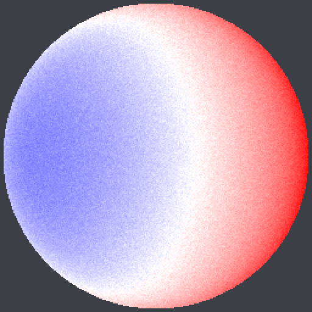

切る・削る・磨く × 高度知能化
「ウェハを薄く削る」工程を、大学生でも分かるように図で解説します。 そして、その品質を自動で見張るためにC++でゼロから作った検査・制御ツールが、 実際に何をどう測っているのかを一つずつ見ていきます。
半導体をつくる工程のうち、「削る」パート。
スマホやSiCパワー半導体の中身は、シリコンやSiCの薄い円板（ウェハ）です。 回路を作り終えたウェハは厚さ約0.8mmありますが、そのままだと厚すぎて、 積み重ねたり曲げたりできません。そこで裏面をダイヤモンド砥石で削って薄くするのが 裏面研削（バックグラインド）です。最新のパワー半導体では 100µm（髪の毛1本ぶん） 以下まで薄くします。
DISCOはこの「削る」装置（グラインダ DGP/DFG シリーズ、 極薄化の TAIKO プロセス）で世界トップシェア。だからこそ、 削った後のウェハが「どれだけ平らで・均一で・傷がないか」を自動で測る技術が重要になります。 以下は、そのための自作ツールの中身です。
ウェハ全面の厚みを測って、色分け表示したもの。青＝薄い、赤＝厚い。

1 2 3この分布から、3つの「平らさの指標」を自動計算します：
計測結果：TTV 6.5µm・WARP 2.9µm・BOW −0.6µm・均一度98.6%（有効セル約49,000点）。
数値は grind_metrology（自作C++、OpenCV不使用）が出力。
削った面のミクロな傷を可視化。明るい（黄～白）ほどダメージ大。
砥石が目減りしても、狙った厚みちょうどに仕上げ続ける制御。
砥石は使うほど切れ味が鈍り、同じ設定でも削れる量が少しずつ減っていきます。 放っておくと、ウェハがどんどん厚く仕上がってしまいます（下の「制御なし」）。 そこで、1枚ごとに測った厚みを見て次の押し込み量を自動で補正する Run-to-Run制御（EWMA）を入れると、ずっと目標100µmに張り付きます（「制御あり」）。
| 方式 | 厚みの狙いからのズレ（RMS） | 結果 |
|---|---|---|
| 制御なし（固定設定） | 26.0 µm | 大きくドリフト |
| APC制御あり | 0.65 µm | 目標を維持 |
グラフは 研削ダッシュボードで見られます（300ウェハの合成劣化シナリオ）。
研削力の上昇から「あと何枚で砥石交換」を予測し、コストまで一気通貫。
砥石が鈍ると研削の力（負荷）が少しずつ上がっていきます。この上がり方を直線で当てはめれば、 ドレス（目立て）が必要な限界（30N）まであと何枚もつか（RUL）を予測できます。
| 指標 | 値 | 意味 |
|---|---|---|
| 現在の研削力 | 29.5 N | 限界30Nに接近 |
| 残り寿命（RUL） | 約10 枚 | まもなくドレス推奨 |
| 良品ダイあたりコスト | $0.0064 | 装置＋砥石＋消耗品／歩留り |
| 良品ダイ／時 | 25,476 | スループット×歩留り |
DISCOは「切る（ダイシング）・削る（グラインダ）・磨く」の精密加工装置メーカー。 この解説で見た厚みマップ計測・研削痕/傷の検査・自動制御・寿命予知・コストは、 すべて研削装置（DGP/DFG、TAIKO）の 品質と生産性を左右する中核テーマです。
しかもこれらを、市販ライブラリに頼らずC++17でゼロから実装し、テストで検証しています （ctest全通過・警告ゼロ）。「C/C++での画像処理システム開発経験」という必須要件に、 ダイシングだけでなく研削まで含めて実物で応えられる、という位置づけです。